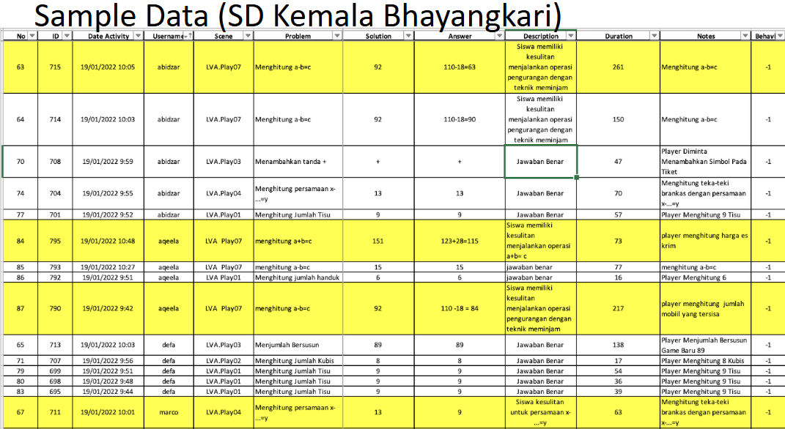
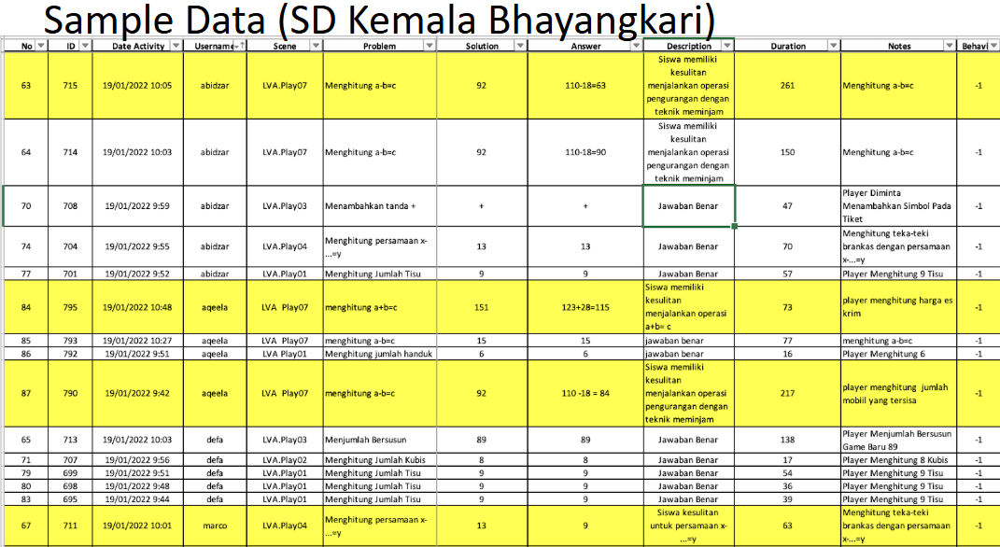

3D-DIG Framework: A Dyscalculia Assessment Tool in Game-Based Learning
The 3D game, built on the 3D-DIG framework, provides an engaging dyscalculia assessment tool for students, offering 8 levels that can be played in any order.
It identifies potential dyscalculia by analyzing student answers, misconceptions, problem-solving duration, and recorded video of both their face and screen during gameplay.
Additionally, the game incorporates data such as Norm Characteristics of Dyscalculia, findings from testing at SD Kemala Bhayangkari, and sample data collected from the same institution to enhance its effectiveness.
 
